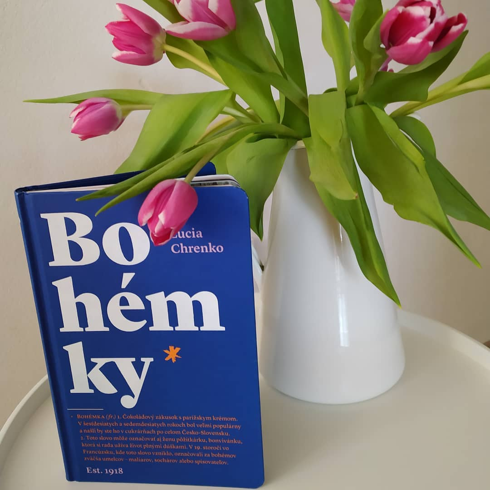

Kniha Bohémky je INÁ!
Iná ako som dosiaľ čítala, je to kniha vhodná do kabelky či položená na konferenčnom stolíku kedykoľvek k nahliadnutiu.
***
Namotala ma na ňu Dominika @drominickacita.sk a som rada, že som mala možnosť sa pri nej odreagovať a inšpirovať.
Inšpirovať nielen overenými receptami (ktoré poznám aj ja z môjho detstva) ale aj niekoľkými zaujímavými tipmi z Paríža :-).
***
Krátke príbehy, spomienky či recepty sú doplnené ŠIK fotografiami k danej téme a mne sa páčilo, že som si ju mohla dávkovať postupne počas čítania iných kníh. Niektoré kapitoly ma oslovili viac, niektoré menej.
Najviac ma oslovil príbeh o čokoláde (keďže sladké MILUJEM) a namotala ma na skutočnú kvalitnú čokoládu.
***
Oceňujem na konci každej kapitoly Slovník autorky, kde vysvetľuje spomínané pojmy (väčšinou francúzske) prípadne značky. Opäť raz som o pár pojmov múdrejšia :-).
***
Čo je však horšie, je fakt, že som sa takto namotala na autorkinu prvú = všade VYPREDANÚ = knihu Tak ma mama naučila....a čo teraz?
***
Tak ak si chcete vychutnať čas pre seba ako Bohémka s dobrou kávou, dezertíkom a nejakým tým tipom z Paríža, tak táto šmrncovná knižočka od Lucii Chrenko by vám kľudne mohla robiť spoločnosť.
18/2021
#knihanadnes #tipnaknihu #dnescitam #kniha #knihomolka #knihozrut #kniznytip #luciachrenko #bohemky